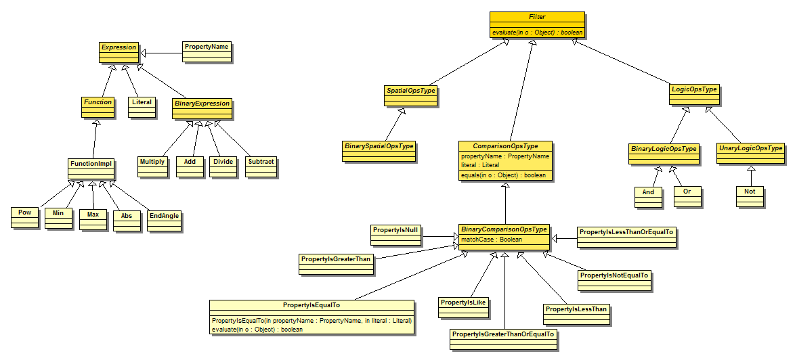
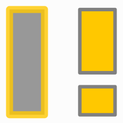

Expression de filtres
Introduction
Le module Filter permet l’expression de filtres sur une collection de features pour le choix d’éléments d’une collection. Il est utilisé par exemple pour :
- appliquer des styles différents à des Features d’une même FeatureCollection.
- définir des règles à appliquer aux agents
Implémentation dans GeOxygene

{kind=link}
Figure 1 : DC Filter dans GeOxygene
Dans la description du filtre, le choix des éléments peut porter sur :
- la valeur d’un attribut (PropertyIsEqualTo)
- une propriété géométrique (intersects)
- la valeur d’une expression (+, -, *, /, etc)
- la combinaison d’expressions (et, ou, etc.)
Application d’un filtre dans un SLD
Par exemple on voudrait filtrer une feature collection, par un attribut nature : si la valeur est égale à carre jaune ou si la valeur est égale à carre gris.

import java.awt.Color;
import java.util.ArrayList;
import java.util.List;
import fr.ign.cogit.geoxygene.filter.PropertyIsEqualTo;
import fr.ign.cogit.geoxygene.filter.expression.Literal;
import fr.ign.cogit.geoxygene.filter.expression.PropertyName;
import fr.ign.cogit.geoxygene.style.PolygonSymbolizer;
import fr.ign.cogit.geoxygene.style.Rule;
import fr.ign.cogit.geoxygene.style.Symbolizer;
// On crée une symbologie pour le rendu d'un feature type
FeatureTypeStyle ftStyle = new FeatureTypeStyle();
// -----------------------------------------------------------------------------------
// CARRE GRIS
// On définit une règle c'est à dire une représentation de features
Rule rule1 = new Rule();
rule1.setName("ruleCarre1");
// On définit la symbolisation carre grix
PolygonSymbolizer symbolizerP2 = new PolygonSymbolizer();
symbolizerP2.setStroke(new Stroke());
symbolizerP2.setFill(new Fill());
symbolizerP.getStroke().setStrokeWidth(2);
symbolizerP.getStroke().setStroke(Color.ORANGE);
symbolizerP.getFill().setColor(Color.gray);
List<Symbolizer> list = new ArrayList<Symbolizer>();
list.add(symbolizerP);
// On ajoute la symbologie à la règle
rule1.setSymbolizers(list);
// On ajoute une expression de filtre à la règle sur l'attribut nature pour la valeur carre jaune
rule1.setFilter(new PropertyIsEqualTo(new PropertyName("nature"), new Literal("carre gris")));
// On ajoute la règle au feature type style
List<Rule> listRule1 = new ArrayList<Rule>();
listRule1.add(rule1);
ftStyle.setRules(listRule1);
//-----------------------------------------------------------------------------------
// CARRE JAUNE
// On définit une règle c'est à dire une représentation de features
Rule rule2 = new Rule();
rule2.setName("ruleCarreJaune");
// On définit la symbolisation carre jaune
PolygonSymbolizer symbolizerP2 = new PolygonSymbolizer();
symbolizerP2.setStroke(new Stroke());
symbolizerP2.setFill(new Fill());
symbolizerP2.getStroke().setStrokeWidth(1);
symbolizerP2.getStroke().setStroke(Color.gray);
symbolizerP2.getFill().setColor(Color.ORANGE);
list = new ArrayList<Symbolizer>();
list.add(symbolizerP2);
// On ajoute la symbologie à la règle
rule2.setSymbolizers(list);
// On ajoute une expression de filtre à la règle sur l'attribut nature pour la valeur carre jaune
rule2.setFilter(new PropertyIsEqualTo(new PropertyName("nature"), new Literal("carre jaune")));
// On ajoute la règle au feature type style
List<Rule> listRule2 = new ArrayList<Rule>();
listRule2.add(rule2);
ftStyle.setRules(listRule2);
Références
- OGC, Filter Encoding